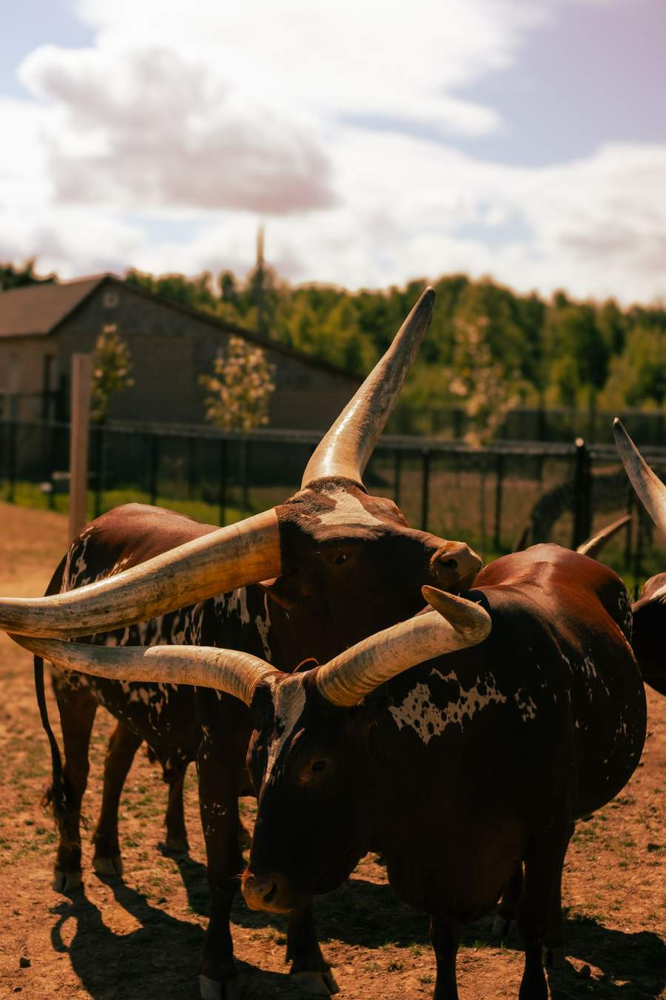
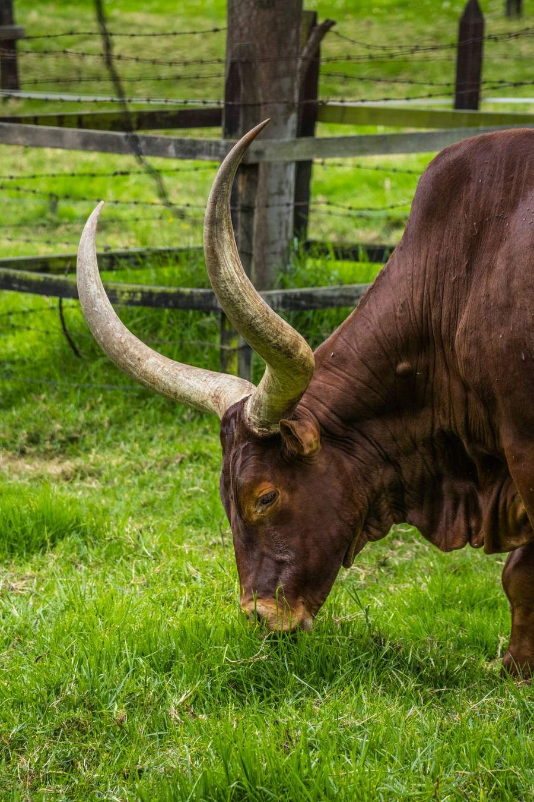
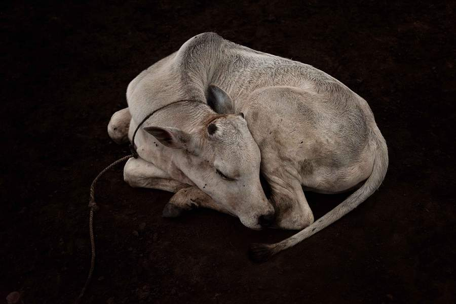

Introduction
The Ankole-Watusi of East Africa carries the largest horns of any cattle breed — a living crown treasured by kings for a thousand years.
For the peoples of the Great Lakes, these cattle mean wealth, status and beauty. The great horns also work as radiators, cooling the blood in the hot sun.
Ankole-Watusi at a Glance
| Origin | Uganda (Ankole), Rwanda & Burundi — East African lakes |
|---|---|
| Type | Cultural & beef breed |
| Horn spread | Up to 2.4 metres — the largest of any breed |
| Coat | Rich brown-red, sometimes speckled with white |
| Dressing percentage | 50–56% carcass yield |
| Price (indicative) | US $1,000–2,500 per animal |
Characteristics

- Giant Horns — The largest horns of any breed — up to 2.4 m across.
- Brown-Red Coat — Rich brown-red, sometimes speckled with white.
- Lean Frame — A lean, long-legged frame for walking to grazing.
- Strong Legs — Legs built for long daily walks in dry country.
Strengths
- Most spectacular horns on Earth
- Heat-adapted and hardy
- High cultural value
- Lean beef
- Tourism and show appeal
Keep in Mind
Horn size — not weight — sets an animal's value. The breed is kept for beauty and status first and beef second, and it is rare outside Africa.
Beef Production
Ankole-Watusi dress out at 50–56% — lean beef as a second product. The breed is kept for beauty, status and culture first.
The giant horns are more than decoration: blood flowing through them is cooled by the air, helping the animal in hot sun.
Price & Buying Tips
Typical price — international (indicative): US $1,000 – 2,500 — per animal; great horn spreads cost far more. All prices are indicative and move with the market.
Prices vary by horn size, age and pedigree. Zoo and safari demand is strong, and exceptional horn spreads sell well above this range.
Before You Buy — Checklist
- Body frame & muscling
- Legs & hooves sound
- Breeding organs normal
- Teeth & age checked
- Body condition score 3+
- Vaccination & deworming record
- Temperament calm
- Weight on scale, not by eye
Photos of the Breed

Frequently Asked Questions
How wide are Ankole-Watusi horns?
Up to 2.4 metres from tip to tip — the largest horns of any cattle breed in the world.
Why are the horns so big?
They are a sign of wealth and beauty — and they work as radiators, cooling the blood as it flows through them in the hot sun.
Where does the Ankole-Watusi come from?
East Africa — Uganda (the Ankole region), Rwanda and Burundi, around the Great Lakes. It is called the cattle of kings.
What is the price of an Ankole-Watusi?
About US $1,000–2,500 per animal (indicative); exceptional horn spreads cost far more.
Free Guide & Related Breeds
All 25 breeds — with bull, cow and calf photos, varieties, production charts and Urdu summaries — are in our free 196-page pictorial guide:
📖 Download the Free Cattle Breeds Guide (PDF)
⚠️ Important: Breed figures on this page are typical published ranges, and prices are indicative only — they change with the market, the animal's age, records and pregnancy status. Always inspect an animal in person (or with your veterinarian) before buying.
✍️ Written by Dr. Shahid Bilal Depal, DVM (PVMC RVMP #15068)
This guide is for educational purposes. Consult a registered veterinarian for diagnosis and treatment.